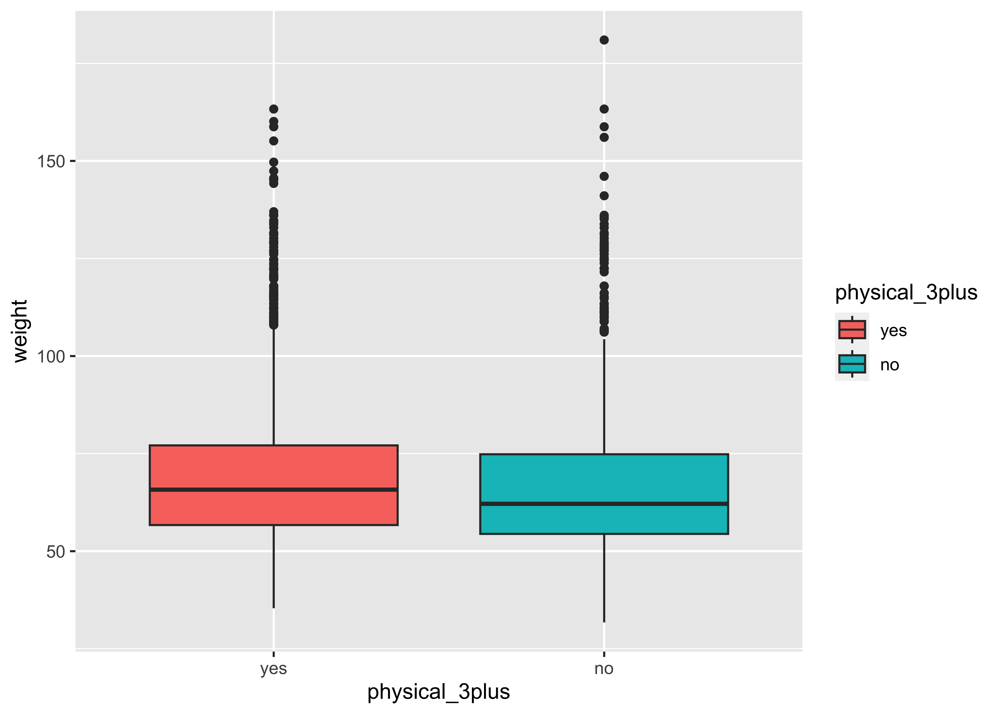

Inference for numerical data
Getting Started
Load packages
In this lab, we will explore and visualize the data using the tidyverse suite of packages, and perform statistical inference using infer. The data can be found in the companion package for OpenIntro resources, openintro.
Let’s load the packages.
Creating a reproducible lab report
To create your new lab report, in RStudio, go to New File -> R Markdown… Then, choose From Template and then choose Lab Report for OpenIntro Statistics Labs from the list of templates.
The data
Every two years, the Centers for Disease Control and Prevention conduct the Youth Risk Behavior Surveillance System (YRBSS) survey, where it takes data from high schoolers (9th through 12th grade), to analyze health patterns. You will work with a selected group of variables from a random sample of observations during one of the years the YRBSS was conducted.
Load the yrbss data set into your workspace.
data(yrbss)Exploratory data analysis
There are observations on 13 different variables, some categorical and some numerical. The meaning of each variable can be found by bringing up the help file: type this in your console
help(yrbss)
1 . What are the cases in this data set? How many cases are there in our sample?
You will first start with analyzing the weight of the participants in kilograms: weight.
Using visualization and summary statistics, describe the distribution of weights. The inspect() function from the mosaic package produces nice summaries of the variables in the dataset, separating categorical (character) variables from quantitative variables.
mosaic::inspect(yrbss)
categorical variables:
name class levels n missing
1 gender character 2 13571 12
2 grade character 5 13504 79
3 hispanic character 2 13352 231
4 race character 5 10778 2805
5 helmet_12m character 6 13272 311
6 text_while_driving_30d character 8 12665 918
7 hours_tv_per_school_day character 7 13245 338
8 school_night_hours_sleep character 7 12335 1248
distribution
1 male (51.2%), female (48.8%)
2 9 (26.6%), 12 (26.3%), 11 (23.6%) ...
3 not (74.4%), hispanic (25.6%)
4 White (59.5%) ...
5 never (52.6%), did not ride (34.3%) ...
6 0 (37.8%), did not drive (36.7%) ...
7 2 (20.4%), <1 (16.4%), 3 (16.1%) ...
8 7 (28.1%), 8 (21.8%), 6 (21.5%) ...
quantitative variables:
name class min Q1 median Q3 max mean
1 age integer 12.00 15.00 16.00 17.00 18.00 16.157041
2 height numeric 1.27 1.60 1.68 1.78 2.11 1.691241
3 weight numeric 29.94 56.25 64.41 76.20 180.99 67.906503
4 physically_active_7d integer 0.00 2.00 4.00 7.00 7.00 3.903005
5 strength_training_7d integer 0.00 0.00 3.00 5.00 7.00 2.949948
sd n missing
1 1.2637373 13506 77
2 0.1046973 12579 1004
3 16.8982128 12579 1004
4 2.5641046 13310 273
5 2.5768522 12407 1176Next, consider the possible relationship between a high schooler’s weight and their physical activity. Plotting the data is a useful first step because it helps us quickly visualize trends, identify strong associations, and develop research questions.
First, let’s create a new variable physical_3plus, which will be coded as either “yes” if the student is physically active for at least 3 days a week, and “no” if not. Recall that we have several missing data in that column, so we will (sadly) drop these before generating the new variable:
yrbss <- yrbss %>%
drop_na() %>%
mutate(physical_3plus = if_else(physically_active_7d >= 2, "yes", "no"),
physical_3plus = factor(physical_3plus,
labels = c("yes", "no"),
levels = c("yes", "no")))
# Let us check
yrbss %>% count(physical_3plus)- Make a side-by-side violin box plots of
physical_3plusandweight. - Is there a relationship between these two variables? What did you expect and why?
gf_boxplot(weight ~ physical_3plus,
fill = ~ physical_3plus,
data = yrbss,
draw_quantiles = TRUE)
The box plots show how the medians of the two distributions compare, but we can also compare the means of the distributions using the following to first group the data by the physical_3plus variable, and then calculate the mean weight in these groups using the mean function while ignoring missing values by setting the na.rm argument to TRUE.
There is an observed difference, but is this difference large enough to deem it “statistically significant”? In order to answer this question we will conduct a hypothesis test.
Inference
Are all conditions necessary for inference satisfied? Comment on each. You can compute the group sizes with the summarize command above by defining a new variable with the definition n().
Write the hypotheses for testing if the average weights are different for those who exercise at least times a week and those who don’t.
Write here !
We will do this in two ways, just for fun: one using mosaic and the other using infer.
But first, we need to initialize the test, which we will save as obs_diff.
obs_diff_infer <- yrbss %>%
specify(weight ~ physical_3plus) %>%
calculate(stat = "diff in means", order = c("yes", "no"))
obs_diff_inferobs_diff_mosaic <- diffmean(~ weight | physical_3plus, data = yrbss)
obs_diff_mosaic diffmean
-1.694383 Note that obs_diff_infer is a 1 X 1 dataframe; obs_diff_mosaic is a scalar!!
Next, we will work through creating a permutation distribution using tools from the infer package.
Recall that the specify() function is used to specify the variables you are considering (notated y ~x), and you can use the calculate() function to specify the statistic you want to calculate and the order of subtraction you want to use. For this hypothesis, the statistic you are searching for is the difference in means, with the order being yes - no.
After you have calculated your observed statistic, you need to create a permutation distribution. This is the distribution that is created by shuffling the observed weights into new physical_3plus groups, labeled “yes” and “no”.
We will save the permutation distribution as null_dist.
The hypothesize() function is used to declare what the null hypothesis is. Here, we are assuming that student’s weight is independent of whether they exercise at least 3 days or not.
We should also note that the type argument within generate() is set to "permute". This ensures that the statistics calculated by the calculate() function come from a reshuffling of the data (not a resampling of the data)! Finally, the specify() and calculate() steps should look familiar, since they are the same as what we used to find the observed difference in means!
We can visualize this null distribution with the following code:
gf_histogram(data = null_dist, ~ stat)
Add a vertical red line to the plot above, demonstrating where the observed difference in means (
obs_diff_mosaic) falls on the distribution.How many of these
null_distpermutations have a difference at least as large (or larger) asobs_diff_mosaic?
Now that you have calculated the observed statistic and generated a permutation distribution, you can calculate the p-value for your hypothesis test using the function get_p_value() from the infer package.
null_dist %>%
get_p_value(obs_stat = obs_diff_infer, direction = "two_sided")Warning: Please be cautious in reporting a p-value of 0. This result is an
approximation based on the number of `reps` chosen in the `generate()` step.
See `?get_p_value()` for more information.- What warning message do you get? Why do you think you get this warning message?
- Construct and record a confidence interval for the difference between the weights of those who exercise at least three times a week and those who don’t, and interpret this interval in context of the data.
We already have the observed difference, obs_diff_mosaic. Now we generate the null distribution using permutation, with mosaic:
We can also generate the histogram of the null distribution, compare that with the observed diffrence and compute the p-value and confidence intervals:
gf_histogram(~ diffmean, data = null_dist_mosaic) %>%
gf_vline(xintercept = obs_diff_mosaic, colour = "red")
# p-value
prop(~ diffmean >= obs_diff_mosaic, data = null_dist_mosaic)prop_TRUE
1 # Confidence Intervals for p = 0.95
mosaic::cdata(~ diffmean, p = 0.95, data = null_dist_mosaic)More Practice
Calculate a 95% confidence interval for the average height in meters (
height) and interpret it in context.Calculate a new confidence interval for the same parameter at the 90% confidence level. Comment on the width of this interval versus the one obtained in the previous exercise.
Conduct a hypothesis test evaluating whether the average height is different for those who exercise at least three times a week and those who don’t.
Now, a non-inference task: Determine the number of different options there are in the dataset for the
hours_tv_per_school_daythere are.Come up with a research question evaluating the relationship between height or weight and sleep. Formulate the question in a way that it can be answered using a hypothesis test and/or a confidence interval. Report the statistical results, and also provide an explanation in plain language. Be sure to check all assumptions, state your \(\alpha\) level, and conclude in context.